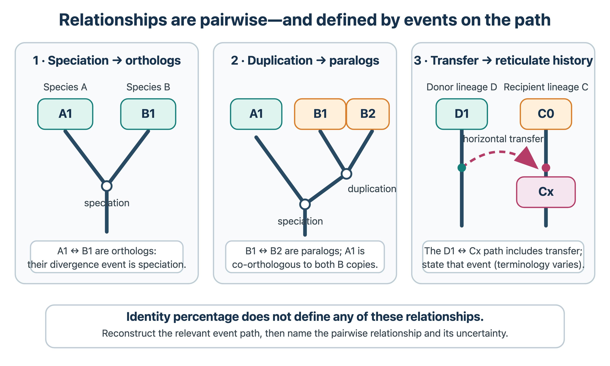

3 Evolution
How does evolution affect the current genomes? Gene duplication, evolutionary pressure.
3.1 Overview
Dobzhansky’s remark that “nothing in biology makes sense except in the light of evolution” holds particularly for bioinformatics. Almost every method that transfers information from one sequence to another assumes common descent, and sequence data are in turn the richest source of information about evolution. Much of the chapter follows how the main ideas of molecular evolution developed, and connects them with what has been learned from the analysis of genomes (Chapter 6) and protein structures (Chapter 9). It covers:
- the origin of life: prebiotic chemistry, the RNA world, metabolism-first scenarios and astrobiology (Section 3.2);
- the basic concepts: mutation, selection, drift, effective population size, hitchhiking, the neutral theory and the molecular clock (Section 3.3);
- detecting selection with dN/dS and related tests, and testing molecular convergence, using the neutral theory as the null model (Section 3.4);
- homologues, orthology inference, orthology databases and gene duplication (Section 3.5); other routes to new genes, including de novo gene birth, and pseudogenes and small proteins are covered in Section 6.8;
- protein evolution: domains, repeats, disorder, coevolution, alternative splicing, structural constraints and ancestral sequence reconstruction (Section 3.6);
- genome evolution: horizontal gene transfer, the power laws of gene family sizes, and gene-family expansion and contraction (Section 3.7).
Phylogeny, the reconstruction of evolutionary trees, including gene trees versus species trees, reconciliation and the tree of life, has its own chapter (Chapter 4).
3.2 The origin of life
All the processes described in this chapter assume a population of replicating organisms. How the first such system arose from chemistry is one of the great open questions in science. There is no agreed answer, but experiments, the geological record and comparative genomics constrain the possibilities. This section gives a short overview, starting with the history of the question.
It helps to keep two kinds of statement apart. Some are established observations: amino acids and nucleobases form under plausible prebiotic conditions, RNA can catalyse reactions, and the catalytic centre of the ribosome is made of RNA. Others are hypotheses that try to connect these observations into a history, such as the RNA world, metabolism first or an origin in hydrothermal vents. None of the hypotheses has been demonstrated.
3.2.1 From spontaneous generation to prebiotic chemistry
For most of history it was assumed that life arose continually from non-living matter (spontaneous generation), for example maggots from meat. Experiments by Francesco Redi in the 17th century and Louis Pasteur in the 1860s showed that this does not happen under present conditions. The question then became how life arose once, under very different conditions on the early Earth.
In the 1920s Alexander Oparin and J. B. S. Haldane independently proposed that the early atmosphere contained no oxygen and was reducing, and that energy from lightning or ultraviolet light could drive the formation of organic molecules, which accumulated in the oceans as a “primordial soup”. In 1953 Stanley Miller, a student of Harold Urey, tested the idea. The Miller–Urey experiment passed electric sparks through a mixture of methane, ammonia, hydrogen and water, and within a week produced several amino acids (Miller 1953). A reanalysis of Miller’s stored samples with modern methods found more amino acids than Miller had reported (Johnson et al. 2008). One such reanalysis, of a previously unreported 1958 experiment that included hydrogen sulfide, detected 23 amino acids, among them sulfur-containing ones (Parker et al. 2011). In 1960 Joan Oró showed that adenine forms from ammonium cyanide (Oró 1960), so the building blocks of both proteins and nucleic acids could be made abiotically. Geochemists later concluded that the early atmosphere was probably less reducing than Miller assumed, which gives lower yields, but organic molecules could also have formed near volcanoes and hydrothermal vents, or been delivered by meteorites: the Murchison meteorite, which fell in Australia in 1969, contains dozens of amino acids.
3.2.2 When did life appear?
The Earth formed about 4.54 billion years ago. Its early history included a giant impact that formed the Moon, and possibly a period of heavy bombardment, but liquid water was present by about 4.4 billion years ago. The oldest generally accepted fossils, stromatolites (layered mats built by microbes) and microfossils, are about 3.5 billion years old. Older evidence, such as isotopically light carbon in a 4.1 billion-year-old zircon crystal (Bell et al. 2015) or possible microfossils in hydrothermal vent deposits that are at least 3.77 billion years old (Dodd et al. 2017), is debated. Molecular clocks calibrated with fossils place the last universal common ancestor (LUCA) at around or before 4 billion years ago, with wide uncertainty (Betts et al. 2018; Moody et al. 2024). Life therefore probably appeared early, soon after the Earth became habitable. LUCA was already a complex cell with a genetic code, ribosomes and hundreds of protein families; its reconstruction is discussed in Section 4.5. Everything between the first chemistry and LUCA must be inferred indirectly, and the following hypotheses try to fill that gap.
3.2.3 The RNA world
Modern life depends on a chicken-and-egg cycle: DNA stores the information, proteins catalyse its replication, and the instructions for making proteins are in DNA. In the 1960s Carl Woese, Francis Crick and Leslie Orgel independently suggested a way out: RNA can both store information and, in principle, catalyse reactions, so the first life could have used RNA for both. The idea became much more plausible when Thomas Cech and Sidney Altman discovered catalytic RNAs, ribozymes: a self-splicing intron (Kruger et al. 1982) and the RNA subunit of ribonuclease P (Guerrier-Takada et al. 1983). Walter Gilbert named the hypothesis the RNA world in 1986 (Gilbert 1986).
Several observations are consistent with it, although none proves it (Joyce 2002; Orgel 2004; Higgs and Lehman 2014):
- the ribosome is a ribozyme: the peptidyl transferase centre, where peptide bonds are formed, consists only of RNA (Ban et al. 2000), so protein synthesis itself is catalysed by RNA;
- many coenzymes, such as ATP, NAD, FAD and coenzyme A, contain nucleotides, perhaps as relics of RNA catalysis;
- deoxyribonucleotides are made from ribonucleotides in all organisms, consistent with DNA being a later invention;
- in vitro evolution has produced ribozymes that catalyse many reactions, including RNA ligases that replicate each other exponentially (Lincoln and Joyce 2009).
The main problem is how RNA itself could have formed. Ribose is unstable, and joining ribose to the bases is inefficient. In 2009 Powner, Gerland and Sutherland showed that activated pyrimidine ribonucleotides can form by a different route from simple precursors, without free ribose (Powner et al. 2009). This led to cyanosulfidic scenarios in which hydrogen cyanide, hydrogen sulfide and ultraviolet light produce precursors of nucleotides, amino acids and lipids in the same environment (Sutherland 2015). Many researchers today see the RNA world as a stage, not necessarily the first one, and think that RNA and peptides coevolved from the start. Whether an RNA world existed at all remains a hypothesis.
3.2.4 Metabolism first and the role of compartments
An alternative view is that self-sustaining networks of chemical reactions came before genetic information. Günter Wächtershäuser proposed that metabolism began on the surfaces of iron–sulfur minerals, driven by the formation of pyrite (Wächtershäuser 1988). William Martin and Michael Russell developed a related scenario in alkaline hydrothermal vents, where natural proton and redox gradients across thin mineral walls could have driven carbon fixation, and where the mineral pores could have served as the first compartments (Martin and Russell 2003). This is consistent with one reconstruction of LUCA as an anaerobic organism that used hydrogen and the acetyl-CoA pathway (Weiss et al. 2016) (a reconstruction that is itself debated), and with the fact that all life uses proton gradients to make ATP. These are scenarios, not demonstrated pathways. Parts of such pathways have been reproduced with metal and mineral catalysts, but a complete, self-sustaining metabolic cycle without enzymes has not been shown. Critics also point out that metabolic networks without a genetic system have limited ability to evolve.
A third component that all scenarios need is a compartment. Fatty acids form vesicles spontaneously, and in laboratory experiments such protocells can grow and divide. A compartment keeps replicating molecules together with what they produce, so that selection can act on them.
3.2.5 Astrobiology
Astrobiology studies the origin, evolution and distribution of life in the universe (Des Marais et al. 2008). It combines the origin-of-life research described above with the search for habitable environments and signs of life elsewhere. Since Michel Mayor and Didier Queloz discovered the first planet orbiting a Sun-like star in 1995 (Mayor and Queloz 1995), thousands of exoplanets have been found, many of them in the habitable zone where liquid water could exist. Within the Solar System, the main targets are Mars, which had liquid water early in its history, and the ice-covered oceans of Jupiter’s moon Europa and Saturn’s moon Enceladus. Astrobiology also studies extremophiles on Earth, organisms that live at high temperature, pressure, acidity or salinity, as models for life elsewhere.
Two ideas from the field are relevant for biology on Earth. Panspermia proposes that life, or its building blocks, was transported between planets by meteorites. It does not solve the origin problem, but moves it elsewhere. The search for biosignatures, chemical or isotopic traces that only life produces, has also sharpened the debate about how to recognise the earliest life on Earth. Once replicating systems existed, the processes in Section 3.3 took over.
See also: further explanation in Section D.3.1; related Wikipedia articles in Section E.3.1.
Parts of this section are adapted from the Wikipedia articles Abiogenesis, Miller–Urey experiment, RNA world, Iron–sulfur world hypothesis, Earliest known life forms and Astrobiology (CC BY-SA 4.0, retrieved 3 October 2026).
3.3 Basic evolutionary concepts
Evolution at the molecular level is the result of a few processes acting together: mutation creates variation, and selection and random genetic drift decide which variants are lost and which spread through the population until they are fixed. Much of bioinformatics can be read as the analysis of the traces these processes leave in sequences. This section summarises the concepts and the history behind them, and ends with the neutral theory, which provides the null model for the tests of selection in Section 3.4.
3.3.1 A short history
Darwin’s On the Origin of Species (1859) proposed descent with modification by natural selection, but without a theory of heredity. Mendel’s laws (1866, rediscovered in 1900) provided the particulate inheritance that Darwin lacked. In the 1920s and 1930s Ronald Fisher, J. B. S. Haldane and Sewall Wright combined the two into population genetics, a mathematical theory of how allele frequencies change under mutation, selection, drift and migration. This was the core of the modern synthesis of the 1940s.
Molecular data entered in the 1950s and 1960s, when protein sequences such as haemoglobin, cytochrome c and fibrinopeptides could be compared between species. Two observations surprised many evolutionists: there was far more variation within species than expected, and proteins seemed to change at a roughly constant rate. These observations led to the neutral theory and the molecular clock (below), and to the neutralist–selectionist debate of the 1970s and 1980s. Today, genome-scale data are analysed with the same population-genetic framework, which provides the null models for detecting selection (Section 3.4).
3.3.2 Mutation
A mutation is any heritable change in the DNA sequence. The main kinds are:
- point substitutions, divided into transitions (purine ↔︎ purine, pyrimidine ↔︎ pyrimidine), which are about twice as frequent as transversions, partly because of the deamination of methylated cytosines in CpG dinucleotides;
- insertions and deletions (indels), often caused by replication slippage in repeats;
- larger rearrangements: duplications, deletions, inversions and translocations of chromosome segments, and the movement of transposable elements;
- duplication of whole chromosomes or genomes (Section 3.5).
In a protein-coding gene, a substitution can be synonymous (silent), changing the codon but not the amino acid, or non-synonymous (missense or nonsense). This distinction is the basis of the dN/dS test for selection.
Mutation rates are low. In humans there are about \(1\)–\(1.5 \times 10^{-8}\) new point mutations per site per generation, or roughly 60–70 new mutations in each child, most of them from the father (citation needed). Per-site rates differ by orders of magnitude between species. Lynch has argued that selection lowers the mutation rate only until a further improvement in replication fidelity is too small to be seen by selection against drift, the drift-barrier hypothesis (Lynch et al. 2016). Species with large effective population sizes (defined below) therefore reach lower per-site rates. Mutations are also not uniformly distributed along a genome: rates vary with sequence context, replication timing and chromatin state.
3.3.3 Selection
Natural selection changes allele frequencies because carriers of different alleles leave different numbers of descendants. Its strength is measured by the selection coefficient \(s\), the relative difference in fitness. Three kinds are important in molecular evolution:
- Purifying (negative) selection removes harmful mutations. It is by far the most common, and it is why functional sequences are conserved, the basis of homology search (Chapter 1).
- Positive (directional) selection increases the frequency of beneficial mutations, which may then sweep to fixation.
- Balancing selection keeps several alleles in the population, for example through heterozygote advantage (sickle-cell haemoglobin in malaria regions) or frequency-dependent selection (immune genes such as the MHC).
3.3.4 Genetic drift and effective population size
In a finite population, allele frequencies also change by chance, because each generation is a random sample of the gametes of the previous one. This is genetic drift. In the simplest model (Wright–Fisher, with \(N\) diploid individuals), a new neutral mutation has a probability \(1/(2N)\) of eventually becoming fixed, and when it does, fixation takes on average about \(4N\) generations. Drift is therefore strong in small populations and weak in large ones.
The \(N\) in these formulas is not the census number of individuals but the effective population size \(N_e\): the size of an idealised population that would show the same amount of drift. \(N_e\) is reduced by fluctuations in population size (bottlenecks), unequal sex ratios and variation in offspring number, and it is usually far smaller than the census size. Linked selection (below) also lowers it locally, so \(N_e\) varies along the genome. Long-term estimates are of the order of \(10^4\) for humans, \(10^5\)–\(10^6\) for Drosophila, and \(10^8\) or more for many bacteria (Charlesworth 2009).
The interplay between selection and drift is governed by the product \(N_e s\). When \(|N_e s| \ll 1\), a mutation behaves as if it were neutral: drift decides its fate. When \(|N_e s| \gg 1\), selection dominates. The same mutation can thus be effectively neutral in a small population and clearly selected in a large one. This is the key idea behind both the nearly neutral theory and Lynch’s explanation for why genome complexity differs between prokaryotes and multicellular eukaryotes (Lynch and Conery 2003; Lynch et al. 2016) (Chapter 6).
The fixation probability of a selected mutation also depends on \(N_e s\) (Kimura’s diffusion approximation). In the simplest case, a new beneficial mutation with a small advantage \(s\) in a large population is fixed with a probability of only about \(2s\): a mutation with a 1% advantage is lost by drift in about 98% of cases. The fixation probability of a slightly harmful mutation falls steeply once \(N_e |s|\) exceeds about one. Because \(N_e\) differs by orders of magnitude between lineages, so does the efficacy of selection. In lineages with small \(N_e\), such as large mammals or endosymbiotic bacteria, more slightly harmful mutations are fixed, which is seen, for example, as higher genome-wide dN/dS (Section 3.4) and weaker codon usage bias.
3.3.5 Genetic hitchhiking and linked selection
Selection on one site also affects nearby neutral sites, because they are inherited together until recombination separates them. When a beneficial mutation sweeps to fixation, linked neutral variants are dragged along: genetic hitchhiking, a term coined by Maynard Smith and Haigh in 1974 (Smith and Haigh 1974). A selective sweep reduces genetic diversity in the surrounding region, and the size of the region depends on the local recombination rate. The removal of harmful mutations has a similar but weaker effect on linked sites, called background selection. Because of these effects, levels of diversity along a genome are not set by drift alone, and regions of low recombination tend to have low diversity. Patterns of reduced diversity and skewed allele frequencies are used to find recent sweeps in population genomic data.
3.3.6 The neutral theory and the molecular clock
In 1968 Motoo Kimura (Kimura 1968), and independently Jack King and Thomas Jukes in 1969 (King and Jukes 1969), proposed the neutral theory of molecular evolution. It holds that most of the differences between species at the molecular level, and most of the variation within species, are caused not by positive selection but by the random drift of mutations that are selectively neutral. Harmful mutations occur but are quickly removed; beneficial ones are rare. The theory does not deny that adaptation happens. It claims that adaptive changes are a small minority of all molecular changes.
The neutral theory makes a simple prediction. The rate at which neutral mutations are substituted (fixed) in a lineage is the number of new mutations per generation, \(2N\mu\), times their probability of fixation, \(1/(2N)\):
\[ k = 2N\mu \cdot \frac{1}{2N} = \mu . \]
The substitution rate equals the neutral mutation rate and does not depend on population size. If the mutation rate and the fraction of neutral mutations stay constant, neutral sequences therefore diverge at a constant rate. These conditions hold only approximately (see below), but the result explains why functionally less constrained sequences (synonymous sites, pseudogenes, introns, fibrinopeptides) evolve fastest: a larger fraction of their mutations are neutral.
The observation that came first was the molecular clock. In the early 1960s Zuckerkandl and Pauling noted (Zuckerkandl and Pauling 1965) that the number of amino acid differences between haemoglobins of different species increases roughly linearly with the time since divergence estimated from fossils. Margoliash made the same observation for cytochrome c (Margoliash 1963): all mammalian sequences are about equally different from all bird sequences, and both are equally different from fish. The clock made it possible to date divergences that left no fossils, and to build trees from sequences alone (Chapter 4).
Tests showed that the clock is only approximate (Langley and Fitch 1974). Rates differ between genes, between sites and between lineages, for example with generation time and metabolic rate, and they can change over time within a lineage. Rates measured over short time spans are often higher than those measured over long ones, partly because slightly harmful mutations have not yet been removed (Ho et al. 2005). A strict molecular clock, a single constant rate, is therefore a model to be tested, not a general law. Modern dating methods use relaxed clocks that allow the rate to vary across the tree, calibrated with several fossils.
Tomoko Ohta extended the theory in 1973 with the nearly neutral theory (Ohta 1973). Many mutations are only slightly harmful, with \(|s|\) close to \(1/N_e\). In small populations these behave as neutral and can be fixed by drift; in large populations they are removed. The theory explains why protein clocks tick at roughly constant rates per year rather than per generation: species with long generation times tend to have small populations, in which more slightly harmful mutations are fixed, and the two effects partly cancel. Today the neutral and nearly neutral theories serve as the null hypothesis of molecular evolution. Adaptive explanations are invoked when the data deviate from neutral expectations (Section 3.4).
See also: further explanation in Section D.3.2; related Wikipedia articles in Section E.3.2.
Parts of this section are adapted from the Wikipedia articles Mutation, Natural selection, Genetic drift, Effective population size, Genetic hitchhiking, Neutral theory of molecular evolution, Nearly neutral theory of molecular evolution and Molecular clock (CC BY-SA 4.0, retrieved 3 October 2026).
3.4 Detecting selection
Claims that a gene or a residue is under selection are common in genome papers, and they rest on the statistical tests described here. The neutral theory provides the null model (Section 3.3): if a sequence evolves neutrally, all kinds of mutations are fixed at the rates at which they occur. Selection shows up as a deviation from this expectation.
Selection acts on organisms: individuals with different phenotypes leave different numbers of offspring. The methods in this section do not observe this. They detect statistical signatures in sequence data that deviate from a neutral null model, and they attribute the deviation to selection under the assumptions of that model. A statement such as “this residue is under positive selection” is shorthand for “a codon model assigns this site to a class with \(\omega > 1\) with high posterior probability”. It is an inference that can be wrong if the model is wrong, and it says nothing directly about which phenotype was selected. For protein-coding genes, the most widely used test compares two kinds of sites in the same gene.
3.4.1 dN/dS (Ka/Ks)
Synonymous mutations do not change the protein and are, to a first approximation, neutral. Non-synonymous mutations change an amino acid and are exposed to selection on the protein. The ratio
\[ \omega = \frac{d_N}{d_S} \quad (\text{also written } K_a/K_s) \]
compares the number of non-synonymous substitutions per non-synonymous site (\(d_N\)) with the number of synonymous substitutions per synonymous site (\(d_S\)) between two sequences or along a branch of a tree. Normalising per site is essential, because only about a quarter of random point mutations in coding sequence are synonymous. The interpretation is:
- \(\omega < 1\): purifying selection predominates. Most amino acid changes are harmful and removed. This is the norm; typical genes have \(\omega\) around 0.1–0.3, and highly constrained genes much lower (citation needed).
- \(\omega \approx 1\): consistent with neutral evolution, as in pseudogenes.
- \(\omega > 1\): evidence for positive (diversifying) selection under the model. Amino acid changes have been favoured, for example in genes involved in immunity, host–pathogen conflicts or reproduction.
These are statements about an average over all the sites and branches compared. A gene-wide \(\omega < 1\) does not mean that every site is under purifying selection, and it can coexist with positive selection at a few sites or on a few branches (Section 3.4.2). A value near one can also be an average of constrained and positively selected sites. Conversely, \(\omega > 1\) is evidence of positive selection only if the model’s assumptions hold: neutral synonymous sites, a correct alignment, and a single tree without recombination (Section 3.4.5).
The first methods estimated \(d_N\) and \(d_S\) by counting sites and differences between two sequences, with corrections for multiple substitutions (Nei and Gojobori 1986). Modern methods use codon models, Markov models of substitution between the 61 sense codons in which \(\omega\) is an explicit parameter, fitted by maximum likelihood on a phylogeny (Goldman and Yang 1994; Yang and Bielawski 2000).
3.4.2 Site, branch and branch-site models
Averaged over a whole gene and a whole tree, \(\omega\) is almost always below one, even when positive selection has acted, because a few adaptive changes are swamped by the many conserved sites. Codon models therefore let \(\omega\) vary:
- Site models allow \(\omega\) to differ between codons. A model that includes a class of sites with \(\omega > 1\) (for example M2a or M8) is compared with a nested model that does not (M1a or M7) by a likelihood ratio test, and Bayesian methods then identify the sites that most probably belong to the class with \(\omega > 1\) (Nielsen and Yang 1998; Yang and Bielawski 2000; Yang et al. 2000). A classic example is the peptide-binding groove of the MHC molecules.
- Branch models let \(\omega\) differ between branches of the tree, for example to test whether a gene evolved faster after a duplication or in a particular lineage.
- Branch-site models test for positive selection on a few sites along a specified (foreground) branch (Zhang 2005).
These models are implemented in programs such as PAML (codeml) and HyPhy (Yang 2007; Pond et al. 2004).
3.4.3 Tests based on polymorphism and divergence
dN/dS was developed for comparing species. Within a population, polymorphisms include slightly harmful mutations that have not yet been removed, so \(\omega\) computed between closely related sequences behaves differently and is hard to interpret (Kryazhimskiy and Plotkin 2008). The McDonald–Kreitman test (McDonald and Kreitman 1991) uses both kinds of data. Under neutrality, the ratio of non-synonymous to synonymous changes should be the same for polymorphisms within a species and for fixed differences between species. An excess of non-synonymous fixed differences indicates adaptive evolution, and its size can be used to estimate the fraction of amino acid substitutions driven by positive selection. McDonald and Kreitman first applied it to the alcohol dehydrogenase gene of Drosophila. Population genomic data are also scanned for the signatures of selective sweeps (Section 3.3): local reductions in diversity, skewed allele frequencies and long haplotypes.
3.4.4 Molecular convergence
The same amino acid change in independent lineages with a similar way of life is tempting evidence of adaptation. Parker and colleagues compared the genomes of echolocating bats and dolphins and reported convergent substitutions in many genes, including some involved in hearing (Parker et al. 2013). Reanalyses showed that comparable levels of convergence occur between lineages that do not echolocate, so that most of the signal was not specific to echolocation (Thomas and Hahn 2015; Zou and Zhang 2015). Convergence is common by chance because each site accepts only a few amino acids, and because related lineages share substitution tendencies.
A test of adaptive convergence therefore needs:
- a species tree and a reconstruction of ancestral states (Section 3.6), to show that the same derived state arose independently on the lineages concerned. A shared ancestral state, or a state shared through introgression or incomplete lineage sorting (Section 4.4), is not convergence;
- a null expectation, estimated from control branches matched for length or from simulations with a model that keeps site-specific amino acid preferences;
- functional evidence that the change affects the phenotype. The substitutions in the Na+/K+-ATPase of insects that feed on toxic plants are a convincing case because their effect on toxin resistance was tested experimentally (Zhen et al. 2012).
3.4.5 Pitfalls
Tests for selection are easy to misuse. The common problems are the following.
- Saturation. When sequences are very divergent, synonymous sites have changed many times and \(d_S\) cannot be estimated reliably. When they are very similar, there are too few changes for a meaningful test.
- Alignment and annotation errors create apparent non-synonymous changes and are a common source of false positives.
- Recombination violates the assumption of a single tree.
- Synonymous sites are not always neutral. Codon usage bias, splicing signals and mRNA structure constrain them, and biased gene conversion can mimic selection.
- Multiple testing. Genome-wide scans test thousands of genes and many branches, and need correction for multiple testing (Section 7.4.5).
Most of these tests assume that the genes compared are orthologues, and that the alignment pairs homologous codons. How homologues are classified and inferred is the subject of Section 3.5.
See also: further explanation in Section D.3.3; related Wikipedia articles in Section E.3.3.
Parts of this section are adapted from the Wikipedia articles Ka/Ks ratio and McDonald–Kreitman test (CC BY-SA 4.0, retrieved 3 October 2026). Parts of this section are adapted from Matteo Tadiello, Modern Bioinformatics: From Foundations to Frontiers, chapter “Molecular Evolution and Comparative Reasoning” (CC BY 4.0), used with permission.
3.5 Homologues, orthologues and gene duplication
Function prediction, comparative genomics and phylogenomics all start by deciding which genes in different genomes correspond to each other. The answer depends on the history of the gene family: speciations, duplications, losses and transfers. This section covers the terms for these relationships, how orthologues are inferred and stored in databases, and gene duplication, the main source of new genes and the reason orthology inference is hard.
3.5.1 Kinds of homology
The definitions were introduced in Section 1.2 and are only summarised here. Two genes are homologous if they descend from a common ancestral gene; homology is a yes-or-no statement, not a degree of similarity. Homologues are classified by the event that separated them (Fitch 1970, 2000; Koonin 2005):
- orthologues diverged by speciation;
- paralogues diverged by gene duplication. Relative to a given speciation, in-paralogues arose by duplication after it (and are together co-orthologous to genes in the other species), while out-paralogues arose before it (Remm et al. 2001);
- xenologues have a history that includes horizontal gene transfer;
- ohnologues are paralogues created by whole-genome duplication.

These definitions describe only the event that separated two genes. They say nothing about function: an orthologue can change function and a paralogue can keep it.
Similar features that evolved independently are analogous (convergent); the classic molecular example is the catalytic triad of chymotrypsin and subtilisin, which share a mechanism but not an ancestor. Convergence also occurs at the level of sequence, but on a small scale. Short linear motifs of a few residues (Section 3.6) arise independently many times, and the same amino acid replacements can be selected independently in different lineages (Section 3.4.4). A shared short motif, or a few identical residues at functional sites, is therefore weak evidence of homology. Homology is inferred from significant similarity over a longer region (Section 1.2), and even then convergent changes at a few sites can mislead tree inference.
The distinction between orthologues and paralogues matters for function prediction. A widely used heuristic, the ortholog conjecture, holds that orthologues are more likely to keep the same function than paralogues, which are freer to diverge after duplication. It underlies the transfer of functional annotation between species (Chapter 10), but it is a statistical tendency, not part of the definition. It has been tested and debated. One study using Gene Ontology annotations concluded that paralogues in the same species are more similar in function than orthologues (Nehrt et al. 2011); a reanalysis showed that this was largely a bias in how annotations are made, and that orthologues are on average somewhat more similar (Altenhoff et al. 2012). The difference is smaller than often assumed.
3.5.2 Inferring orthology
Orthology is defined by the gene tree and the species tree, but building and reconciling trees for every gene family is expensive. Methods therefore fall into two groups (Altenhoff et al. 2019):
Graph-based methods compare all proteins of all genomes with each other and cluster them using sequence similarity.
- Reciprocal best hits (RBH). Genes \(a\) in genome A and \(b\) in genome B are predicted to be orthologues if \(b\) is the best hit of \(a\) in B and \(a\) is the best hit of \(b\) in A. RBH is simple and fast and gives candidate one-to-one orthologues; it does not establish orthology by itself. It cannot handle in-paralogues (one gene in one genome is orthologous to several in the other). It fails when the true orthologue has been lost in one genome, because the best hit is then a paralogue, and when rates differ after a duplication, so that a slowly evolving paralogue scores higher than a fast-evolving orthologue.
- COGs (Clusters of Orthologous Groups), introduced by Tatusov, Koonin and Lipman in 1997, extend RBH to many genomes. Groups are built from triangles of reciprocal best hits in three genomes, which are merged when they share sides (Tatusov et al. 1997). COGs and their successors (KOGs, arCOGs, eggNOG; Huerta-Cepas et al. (2018)) are widely used for functional annotation of prokaryotic genomes.
- InParanoid, from Erik Sonnhammer’s group in Stockholm, starts from reciprocal best hits between two genomes as “seed” orthologues, and then adds in-paralogues: genes in the same genome that are more similar to the seed than to any gene in the other genome (Remm et al. 2001).
- OrthoMCL clusters a graph of reciprocal best hits and in-paralogues from many genomes with the Markov clustering algorithm (Li et al. 2003).
Tree-based methods build a gene tree for each family and reconcile it with the species tree (Section 4.4). Duplication nodes separate paralogues and speciation nodes orthologues. Examples are Ensembl Compara, PhylomeDB and PANTHER. They are more accurate in principle, especially for complex families with many duplications and losses, but slower and sensitive to errors in the gene trees.
OrthoFinder (Emms and Kelly 2019) combines the two: it first clusters genes into orthogroups (all genes descended from one gene in the last common ancestor of the species considered) with a graph method, then infers a gene tree for each orthogroup, a rooted species tree from all of them, and finally the orthologues, paralogues and duplication events from the reconciled gene trees.
Methods disagree considerably, so the Quest for Orthologs consortium has developed shared reference proteomes and standardised benchmarks (Altenhoff et al. 2016). These show a trade-off between precision and recall: methods that find more true orthologues also report more false ones.
3.5.3 Orthology is not transitive
Orthology is a relationship between pairs of genes, and it is not transitive. If \(a\) is orthologous to \(b\) and \(b\) to \(c\), \(a\) and \(c\) need not be orthologues. The simplest case is a pair of in-paralogues: if a gene duplicated in the human lineage after the split from mouse, both human copies are orthologous to the single mouse gene, but they are paralogues of each other. The same happens across species. Suppose a gene duplicated in the common ancestor of species A and C, after that lineage had separated from species B, and A and C then lost different copies. The gene \(a\) in A and the gene \(c\) in C are both orthologous to the gene \(b\) in B, but they diverged at the duplication, so they are paralogues, and a tree built from them would mislead (hidden paralogy; Section 4.4).
Relationships are therefore reported as one-to-one, one-to-many or many-to-many, and groups of orthologues in many species have to be defined relative to a point in the species tree. A hierarchical orthologous group (HOG) is the set of genes descended from a single gene in the last common ancestor of a chosen clade (Altenhoff et al. 2013). The orthogroups of OrthoFinder are HOGs at the root of the species analysed. A HOG defined at a deep level, for example vertebrates, contains all the copies made by later duplications, and splits into several HOGs at a shallower level, such as mammals, if the gene duplicated in between. A group of orthologues is therefore meaningful only together with its taxonomic level. The COGs and the deepest eggNOG groups are broad groups of this kind, and can contain ancient paralogues with different functions (Gabaldón and Koonin 2013).
3.5.4 Orthology databases
Most users do not infer orthologues themselves but take them from a database. The main resources differ in method, species and output:
- OMA (Roth et al. 2008; Altenhoff et al. 2020) infers pairwise orthologues from evolutionary distances estimated from all-against-all Smith–Waterman alignments. It removes hidden paralogues with witnesses of non-orthology: if a third genome contains two genes, one closer to each of the candidates \(a\) and \(b\), the candidates probably descend from an older duplication, and their true orthologues have been lost. OMA reports pairwise orthologues, OMA groups (sets of genes, at most one per species, that are all orthologous to each other, which are conservative and useful as markers for phylogenomics) and HOGs.
- OrthoDB (Kuznetsov et al. 2022) provides HOGs at every major node of the taxonomy for many thousands of eukaryotes, prokaryotes and viruses. Its single-copy groups are the basis of the BUSCO sets used to assess the completeness of genome assemblies (Section 5.3).
- eggNOG (Huerta-Cepas et al. 2018) provides groups at many taxonomic levels together with functional annotations, which eggNOG-mapper transfers to new sequences (Chapter 10).
- Tree-based resources. Ensembl Compara (Vilella et al. 2008) covers vertebrates and other eukaryotes in Ensembl, and also assesses each predicted orthologue by conserved gene order and whole-genome alignment. PANTHER (Mi et al. 2018) combines family trees with curated functional annotations, TreeFam (Li 2006) covered animal families, and PhylomeDB (Huerta-Cepas et al. 2013) stores the complete collection of gene trees (the phylome) of each genome.
- Extensions of InParanoid from Stockholm include Hieranoid, which applies InParanoid hierarchically along the species tree (Schreiber and Sonnhammer 2013), and Domainoid, which infers orthology for individual domains, so that proteins with rearranged domain architectures can be handled (Persson et al. 2019).
- Meta-methods such as MetaPhOrs combine the predictions of several phylogeny-based databases and score their consistency (Pryszcz et al. 2010). Agreement between databases is reassuring, but they are not independent if they share proteomes, trees or algorithms.
Databases disagree for several reasons that do not imply carelessness: different species sets and genome releases, the choice of one protein isoform per gene, gene models that are split or fused, thresholds, tree methods and the taxonomic level of the groups. A practical consequence is to record which resource, release and relationship type were used, and to check important cases with a gene tree, the domain architecture and conserved gene order (Section 6.5).
3.5.5 Gene duplication
Gene duplication is the main source of new genes, a view championed by Susumu Ohno in a 1968 paper (Ohno et al. 1968) and his 1970 book Evolution by Gene Duplication (Ohno 1970). Duplications arise in several ways:
- unequal crossing-over between misaligned chromosomes produces tandem duplications, which explains clusters of related genes such as the globins, olfactory receptors and Hox genes;
- retrotransposition of an mRNA produces an intronless copy (retrocopy) elsewhere in the genome, which usually lacks a promoter and becomes a processed pseudogene, but occasionally becomes a functional retrogene (Section 6.8);
- segmental duplications copy larger chromosomal regions;
- whole-genome duplication (polyploidy) copies everything at once.
Duplications are frequent. Lynch and Conery estimated from genome sequences that a typical gene duplicates at a rate of the order of 0.01 per gene per million years, comparable to the point-mutation rate per site (citation needed), but that most copies are lost again within a few million years (Lynch and Conery 2000).
Duplication is not the only source of new genes: genes also arise by fusion and fission, by horizontal transfer, by domestication of transposable elements and de novo from non-coding sequence. These mechanisms, together with the types of pseudogenes and the small proteins that classical annotation missed, are described in Section 6.8.
The fates of duplicated genes
Immediately after duplication, the two copies are at least partly redundant, so the selective constraints on one or both of them may be relaxed, although both can also remain under purifying selection (Innan and Kondrashov 2010).
- Nonfunctionalisation. The usual fate is that one copy accumulates disabling mutations and becomes a pseudogene, which eventually decays beyond recognition.
- Neofunctionalisation. Ohno’s classic model: one copy keeps the ancestral function, and the other acquires a new, beneficial function by mutation. The evolution of new enzyme specificities, or of the colour vision opsins in primates, are examples.
- Subfunctionalisation. In the duplication–degeneration–complementation model of Force and colleagues (Force et al. 1999), an ancestral gene with several functions or expression domains is duplicated, and each copy loses a different subset by degenerative mutations. Both copies are then needed to perform the original set of functions, and both are preserved, without any new function. Subfunctionalisation can be followed by specialisation of each copy.
- Dosage effects. Some duplicates are kept because more gene product is beneficial (for example rRNA genes). Others are sensitive to the balance between interacting proteins: duplicating one subunit of a complex can be harmful, which is why such genes are rarely retained after small duplications but often kept together after whole-genome duplication, when the balance is preserved (Papp et al. 2003).
Gene conversion and concerted evolution
Duplicated genes do not always evolve independently. Gene conversion is the non-reciprocal copying of a stretch of sequence from one gene onto a similar one during recombinational repair (Chen et al. 2007). Between paralogues it homogenises the copies, so that members of a family stay more similar to each other within a species than to their orthologues in other species. This is called concerted evolution; the tandem arrays of ribosomal RNA genes are the classic example. For sequence analysis, gene conversion has two consequences. Converted paralogues look younger than they are, which distorts the dating of duplications and can make paralogues appear as lineage-specific in-paralogues in orthology inference. Different parts of a gene can also have different histories, which violates the assumption of a single tree (Section 4.4). GC-biased gene conversion, which favours G and C alleles in heterozygotes, also affects base composition and can mimic positive selection.
Whole-genome duplication
Ohno also proposed that whole-genome duplications early in vertebrate evolution provided the raw material for vertebrate complexity (Ohno et al. 1968). In its later form, two rounds of duplication in the ancestor of vertebrates, this became the 2R hypothesis (Holland et al. 1994). It was controversial for decades because the signal had been eroded by gene loss and rearrangement. Genome sequences eventually settled the question. In yeast, Wolfe and Shields found duplicated blocks of genes in Saccharomyces cerevisiae and proposed an ancient genome duplication (Wolfe and Shields 1997). Kellis and colleagues proved it by comparison with Kluyveromyces waltii, which had not duplicated: each region of K. waltii corresponded to two regions in S. cerevisiae, and in most cases only one of the two copies of each gene had been kept (Kellis et al. 2004). For vertebrates, the analysis of the distribution of paralogous regions across the human genome provided strong support for two rounds of duplication in the ancestor of jawed vertebrates (Dehal and Boore 2005). Further duplications occurred in the ancestor of teleost fish (3R) and again in salmonids, and polyploidy is extremely common in plants, where most lineages show several ancient duplications.
After a whole-genome duplication most duplicates are lost, but the retained ohnologues are strongly biased towards genes involved in signalling, transcriptional regulation and development, consistent with the dosage-balance hypothesis. The duplicated Hox clusters of vertebrates are a classic example. Duplicated genes diverge at the protein level, and Section 3.6 follows how domains, repeats and structures change in protein evolution.
See also: further explanation in Section D.3.4; related Wikipedia articles in Section E.3.4.
Parts of this section are adapted from the Wikipedia articles Gene duplication, Subfunctionalization, Neofunctionalization and Paleopolyploidy (CC BY-SA 4.0, retrieved 3 October 2026). Parts of this section are adapted from Matteo Tadiello, Modern Bioinformatics: From Foundations to Frontiers, chapter “Orthology: Concepts, Algorithms, and Databases” (CC BY 4.0), used with permission.
3.6 Protein evolution
Genes evolve, but selection acts on what the protein does. The structure, stability and interactions of a protein therefore shape how its sequence can change. This section collects what has been learned about protein evolution from comparisons of sequences, structures and genomes, from the arrangement of domains to the constraints on single sites, and ends with the reconstruction of ancestral proteins.
3.6.1 Domain evolution: combination, fusion and fission
Most proteins, especially in eukaryotes, consist of several domains, and domains are the units of protein evolution (Section 1.7). New proteins are mostly made by rearranging existing domains rather than by inventing new ones. Comparisons across genomes show several regularities (Apic et al. 2001; Björklund et al. 2005):
- The number of distinct domain combinations is small compared with what would be possible, and most domains have only one or two partners. A few promiscuous domains (for example SH3, SH2, PH and immunoglobulin domains) combine with very many others (Basu et al. 2008).
- Domain architectures change mainly by gaining or losing domains at the N- or C-terminus, rather than by insertions in the middle (Björklund et al. 2005).
- Gene fusion joins domains that previously formed separate proteins, and gene fission splits them. Both occur (Snel et al. 2000), but in a comparison of 131 genomes fusion was about four times as frequent as fission (Kummerfeld and Teichmann 2005). Because fused domains usually work together, fusion events are used to predict functional links between proteins that are separate in other species (the “Rosetta stone” method; Chapter 10).
- Multidomain proteins are more common in eukaryotes than in prokaryotes, and animals have invented many new domain combinations, particularly in signalling and cell adhesion.
- The order in which subunits of a protein complex assemble often mirrors the order in which they were added during evolution (Levy et al. 2008).
3.6.2 Repeat proteins
Many proteins contain tandem repeats: the same unit, from a few residues to a whole domain, repeated many times. Repeats of short motifs of about 20–40 residues often stack into elongated solenoid structures, such as ankyrin repeats, leucine-rich repeats (LRR), tetratricopeptide repeats (TPR) and HEAT/armadillo repeats. Others close into rings, such as the β-propellers of WD40 proteins. Larger repeats consist of whole domains, for example the immunoglobulin and fibronectin domains of titin. Kajava classified repeat proteins by the length of the unit and the resulting structure (Kajava 2012).
Repeats evolve quickly by internal duplication and loss of units, through unequal crossing-over or replication slippage. Comparative analyses show that repeated domains are much more common in eukaryotes, especially in animals, and that repeat number often differs even between close homologues (Björklund et al. 2006). Because each unit adds a binding surface, repeat proteins are well suited for protein–protein interactions, and their modular nature has made them popular scaffolds for protein design. For sequence analysis, repeats are a challenge: they cause ambiguous alignments, inflated scores and difficulties in defining homologous positions.
3.6.3 Evolution of intrinsically disordered proteins
Many proteins, or long regions of them, do not fold into a single stable structure. These intrinsically disordered regions are common in eukaryotes, where a substantial fraction of all residues is predicted to be disordered, and rarer in prokaryotes (Lee et al. 2014). They often act as flexible linkers, or bind other proteins through short linear motifs of a few residues, as in many signalling and regulatory proteins.
Disordered regions evolve differently from folded domains (Brown et al. 2011):
- Their sequences change much faster, and insertions and deletions are frequent. When homologous proteins differ in length, the extra residues are mostly found in disordered regions, which suggests that disordered regions are the main place where proteins can grow or shrink (Light et al. 2013).
- What is conserved is often not the sequence but properties: the amino acid composition, net charge, the fact of being disordered, or the presence of short motifs at varying positions. Such regions are therefore hard to align, and standard substitution matrices and alignment methods, designed for folded domains, fit them poorly.
- Short motifs can appear and disappear quickly by a few mutations, which makes disordered regions a rapid source of new interactions and regulation.
3.6.4 Coevolution
Residues that interact in a structure cannot change independently. If a mutation at one position destabilises a contact, a compensating mutation at the interacting position can restore it. Over many homologues, this produces correlated mutations between positions in a multiple sequence alignment. The idea was tested in the 1990s (Göbel et al. 1994), but simple correlation measures gave poor predictions of contacts because they cannot separate direct couplings from indirect, transitive correlations. Global statistical models, notably direct coupling analysis, largely solved this problem (Weigt et al. 2009; Marks et al. 2011). Given deep enough alignments, the strongest couplings predict residue contacts accurately, which made the first accurate de novo structure predictions of large proteins possible and is part of the information used by AlphaFold2 (Chapter 9). The same principle applied to concatenated alignments of two interacting protein families predicts which proteins interact and how (Cong et al. 2019) (Chapter 11). Coevolution is also the basis of comparative RNA structure analysis, where it appears as compensatory base pair changes (Section 1.8).
3.6.5 Alternative splicing and its evolution
In eukaryotes, the exons of one gene can be combined in different ways, producing several mRNA and protein isoforms. RNA-seq showed that almost all human multi-exon genes, about 95%, are alternatively spliced (Pan et al. 2008; Wang et al. 2008). Comparisons between species show that splicing patterns evolve fast: within the same tissue, splicing differs more between species than gene expression does, and many alternative exons are specific to one lineage (Barbosa-Morais et al. 2012; Merkin et al. 2012). Alternatively spliced segments often lie in disordered regions and contain binding motifs, so tissue-specific splicing can rewire protein interactions (Buljan et al. 2012).
How much of this is functional is debated. Proteomics experiments detect only a small fraction of the predicted isoforms, most genes have one dominant isoform, and alternative isoforms are often poorly conserved. This suggests that much alternative splicing is noise from an imprecise splicing machinery, which is tolerated because it has little effect (Tress et al. 2017). Alternative splicing is therefore an example of a general question in evolutionary genomics: whether a widespread molecular activity is an adaptation or a by-product (Chapter 6).
3.6.6 Structural and functional constraints on protein evolution
Comparing sequences with structures has shown that the rate of evolution varies systematically, both between sites in a protein and between proteins (Echave et al. 2016).
- Between sites. Buried residues in the hydrophobic core evolve slowly, and surface residues fast. The rate of a site correlates with its relative solvent accessibility and, even more, with how many contacts it makes (packing density). Active sites and binding interfaces are conserved, which is how functional sites are recognised in alignments. The exchanges allowed at a site depend on its environment: hydrophobic for hydrophobic in the core, and much freer exchanges on the surface.
- Between proteins. The strongest predictor of how fast a protein evolves is not its functional importance but its expression level: highly expressed proteins evolve slowly (Drummond et al. 2005). One explanation is that mistranslated or misfolded copies of an abundant protein are costly to the cell, so there is strong selection for sequences that fold robustly.
- Stability. Most proteins are only marginally stable, and most mutations are destabilising. Neutral evolution under a requirement for minimal stability alone reproduces this marginal stability and the robustness of proteins to mutation (Taverna and Goldstein 2002). A destabilising but beneficial mutation can often only be accepted after a stabilising one, which makes evolutionary paths depend on the order of mutations (epistasis).
- Structure is conserved longer than sequence. Homologous proteins keep the same fold long after sequence similarity has disappeared, and the structural divergence of the core increases slowly as identity falls (Chothia and Lesk 1986). This is why structure is used to detect remote homology (Section 1.2), and why the number of distinct folds in nature is limited (Chothia 1992; Holm and Sander 1996).
3.6.7 Ancestral sequence reconstruction
The idea of inferring the sequences of extinct proteins goes back to Pauling and Zuckerkandl (Pauling and Zuckerkandl 1963). The same substitution models used to build trees (Section 4.3.6) can be used to infer the sequences of extinct ancestors at the internal nodes of a tree. Early methods used parsimony; modern methods use maximum likelihood or Bayesian inference. Given an alignment, a tree and a model, they compute for each site and each node the posterior probability of every amino acid or nucleotide (Yang et al. 1995; Williams et al. 2006). The reconstructed gene can then be synthesised and the “resurrected” protein studied in the laboratory. This has been used to test hypotheses about how new functions and specificities arose, which mutations were needed and in which order (epistasis), the temperature of ancient environments from the thermostability of ancestral proteins, and as a starting point for protein engineering (Thornton 2004).
A reconstruction is an estimate, not an observation, and its uncertainty should be taken into account:
- The posterior probabilities are conditional on the alignment, the tree and the substitution model. Errors in any of them propagate, and insertions and deletions are usually handled crudely.
- Uncertainty grows with the depth of the node and with the rate of the site. Deep ancestors may have many sites where two or more residues are almost equally likely.
- The common practice of taking the most probable residue at every site is biased. It systematically picks the most frequent and often stabilising residues, so such reconstructions tend to overestimate stability. Robustness is therefore tested by also making alternative ancestors with the second most probable residues, or by sampling sequences from the posterior distribution, and checking that the conclusions do not change.
Ancestral reconstruction is also needed to test molecular convergence (Section 3.4.4). The next section moves from single proteins to whole genomes.
See also: further explanation in Section D.3.5; related Wikipedia articles in Section E.3.5.
Parts of this section are adapted from the Wikipedia articles Tandem repeat, Intrinsically disordered proteins, Short linear motif and Alternative splicing (CC BY-SA 4.0, retrieved 3 October 2026).
3.7 Genome evolution
The structure of genomes, how many genes they contain, how they are organised and how they differ between the domains of life, is covered in Chapter 6. This section discusses three evolutionary questions that complete genome sequences made it possible to answer: how much genes move between lineages, why gene families have the sizes they have, and whether a family has expanded unusually in one lineage.
3.7.1 Horizontal gene transfer
Horizontal (lateral) gene transfer (HGT) is the movement of genetic material between organisms other than from parent to offspring. In prokaryotes it occurs through three main mechanisms:
- transformation, the uptake of free DNA from the environment;
- transduction, transfer by bacteriophages;
- conjugation, transfer of plasmids or integrative elements through direct cell-to-cell contact.
HGT was first recognised through the spread of antibiotic resistance between bacterial species in the 1950s. Complete genome sequences showed how common it is (Ochman et al. 2000; Koonin et al. 2001). Transferred genes can be recognised in several ways:
- phylogenetic incongruence: the gene tree conflicts strongly with the species tree (Section 4.4);
- phyletic patterns: a gene is present in a species but absent from all its close relatives, and present in distantly related organisms;
- composition: recently transferred genes often have a GC content or codon usage that differs from the rest of the genome. This signal fades as the gene adapts to its new host.
Each method has false positives (for example, gene loss can mimic a patchy distribution), and estimates of the amount of HGT vary. It is clear, however, that in bacteria and archaea gene content changes rapidly. Strains of the same species can differ in a large fraction of their genes, which led to the concept of the pangenome: a core of genes shared by all strains and an accessory part present in only some of them (Tettelin et al. 2005). Transfer, rather than duplication, is the main way prokaryotic gene families expand (Treangen and Rocha 2011). Transferred genes are often involved in adaptation to new niches: antibiotic resistance, virulence, metabolism of new compounds.
HGT challenges the idea of a single tree of life. Doolittle argued in 1999 that, if genes are transferred frequently, the history of prokaryotes is better described as a network than a tree (Doolittle 1999). In practice, a core of genes that are rarely transferred, such as those for ribosomal proteins, still gives a consistent tree that is used to classify prokaryotes (Section 4.5), but many other genes do not follow it. In eukaryotes, HGT is much rarer, with an important exception: the transfer of genes from the endosymbionts that became mitochondria and plastids to the nuclear genome (endosymbiotic gene transfer).
3.7.2 Power laws and the statistics of gene families
When the first complete genomes were compared, a simple regularity appeared. The number of protein families (or folds, or domains) of a given size \(n\) falls off approximately as a power law,
\[ P(n) \propto n^{-\gamma}, \]
rather than exponentially. In every genome, a few families are very large (protein kinases, ABC transporters, zinc fingers), and most families have only one or a few members. This was shown for gene families by Huynen and van Nimwegen (Huynen and Nimwegen 1998), and for domain and fold occurrence by Qian, Luscombe and Gerstein (Qian et al. 2001). The exponent differs between genomes: larger genomes have flatter distributions, with relatively more large families.
These distributions can be explained by simple models of evolution. In birth–death–innovation models, families grow by duplication of one of their members (with a probability proportional to the family size, as in “rich get richer” models), shrink by gene loss, and new families are created by innovation, such as horizontal transfer or the origin of new genes. Such models reproduce the observed distributions without assuming selection for particular family sizes (Koonin et al. 2002). A related regularity is that the number of genes in certain functional categories scales with genome size as a power law: the number of transcription regulators grows faster than linearly with the number of genes, and the number of genes for basic functions such as translation grows slower (Nimwegen 2003). Similar power laws are found in other biological networks (Chapter 11). Together with other statistical regularities, they have been called the “laws” of genome evolution (Koonin 2011).
The power laws also have practical consequences for bioinformatics. A few very large families dominate databases and search results, and an appreciable fraction of the genes in any newly sequenced genome belongs to small families or is unique to the lineage (“orphan” genes, typically 10–20% of a genome (Khalturin et al. 2009)), for which homology-based annotation has nothing to offer (Chapter 10). Some orphans are genuinely new genes born de novo from non-coding DNA, while others are old genes whose homologues have diverged beyond detection; how the two are told apart is discussed in Section 6.8.
3.7.3 Gene-family expansion and contraction
A family with 20 members in one species and five in its relatives may have expanded in that lineage, but the counts alone do not show it. Family sizes change all the time by duplication and loss, so a count must be compared with what is expected along the species tree. The usual approach models family size as a birth–death process on a dated species tree: each copy duplicates at rate \(\lambda\) and is lost at rate \(\mu\), the likelihood of the observed counts at the leaves is computed, and families whose changes are improbable under the genome-wide rates are flagged. The program CAFE introduced this approach (Hahn et al. 2005; De Bie et al. 2006), and CAFE5 allows the rates to vary between families (Mendes et al. 2020). Applied to mammals, it showed rapid turnover of gene families: humans and chimpanzees differ by at least 6% of their genes in copy number (Demuth et al. 2006).
The analysis is only as good as the counts. Collapsed repeats in an assembly hide copies, while uncollapsed haplotypes, fragmented gene models and pseudogenes add false ones, and differences in assembly and annotation quality between genomes easily dominate the signal (Section 5.3). An unusual change in family size is a statement about history, not about adaptation. Linking an expansion to a phenotype requires further evidence, such as expression, biochemical divergence of the copies and repeated expansions in independent lineages with the same phenotype. Reconciling gene trees with species trees, which underlies both the detection of transfers and the counting of duplications, is treated in Section 4.4.
See also: further explanation in Section D.3.6; related Wikipedia articles in Section E.3.6.
Parts of this section are adapted from the Wikipedia articles Horizontal gene transfer and Pan-genome (CC BY-SA 4.0, retrieved 3 October 2026). Parts of this section are adapted from Matteo Tadiello, Modern Bioinformatics: From Foundations to Frontiers, chapter “Molecular Evolution and Comparative Reasoning” (CC BY 4.0), used with permission.
3.8 Key concepts
A checklist for revision.
- Origin of life: established observations versus hypotheses; spontaneous generation and Pasteur; Oparin–Haldane; the Miller–Urey experiment and its reanalysis; the age of the Earth and the earliest evidence of life; the RNA world and the evidence for it (ribozymes, the ribosome, coenzymes); prebiotic synthesis of nucleotides; metabolism-first and hydrothermal-vent scenarios; protocells; astrobiology, exoplanets and biosignatures
- Population genetics: types of mutation and mutation rates; purifying, positive and balancing selection; genetic drift and fixation probability (neutral \(1/(2N)\), beneficial about \(2s\)); effective population size and why \(N_e s\) matters for the efficacy of selection; hitchhiking, selective sweeps and background selection
- Neutral theory: Kimura and King–Jukes; why the neutral substitution rate equals the mutation rate; the molecular clock (Zuckerkandl and Pauling, Margoliash) and its limits (rate variation between lineages, genes, sites and over time; strict versus relaxed clocks); Ohta’s nearly neutral theory; the neutralist–selectionist debate
- Selection: selection on fitness versus statistical signatures in sequences; dN/dS and its interpretation (an average over sites and branches; model assumptions); counting methods and codon models; site, branch and branch-site models (PAML, HyPhy); the McDonald–Kreitman test; molecular convergence, null models and the echolocation debate; pitfalls
- Homology: orthologues, paralogues (in-/out-), xenologues, ohnologues, analogues; relationship type versus functional outcome; convergent sequence evolution of short motifs and single sites; the ortholog conjecture and the debate about it
- Orthology inference: reciprocal best hits as candidate one-to-one orthologues and their failure modes; COGs, InParanoid, OrthoMCL, eggNOG; tree-based methods; OrthoFinder; Quest for Orthologs benchmarks; orthology is not transitive; one-to-one, one-to-many and many-to-many relationships; hierarchical orthologous groups and their taxonomic level; orthology databases (OMA and witnesses of non-orthology, OrthoDB, eggNOG, Ensembl Compara, PANTHER, PhylomeDB, Hieranoid, Domainoid, MetaPhOrs) and why they disagree
- Gene duplication: mechanisms (tandem, retrotransposition, segmental, whole-genome); non-, neo- and subfunctionalisation (DDC model); dosage balance; gene conversion and concerted evolution; whole-genome duplications in yeast, vertebrates (2R), fish and plants, and how they were proven
- Other origins of new genes (see Section 6.8): retrogenes, fusion and fission, HGT, domestication of transposable elements, de novo gene birth and proto-genes; orphan genes versus homology detection failure; pseudogenes as the usual fate of duplicates and retrocopies
- Protein evolution: domain combinations, fusion and fission; repeat proteins; how disordered regions evolve; coevolution and direct coupling analysis; alternative splicing and the noise-versus-function debate; site-specific rates and structure, expression level and rate, marginal stability and epistasis; ancestral sequence reconstruction and its uncertainty
- Genome evolution: mechanisms and detection of HGT; pan-genomes; tree versus network of life; power-law distributions of family sizes and birth–death–innovation models; scaling of functional categories with genome size; birth–death models of gene-family size (CAFE) and why an expansion is not evidence of adaptation
3.9 Recommended reading
These papers are recommended for reading in full:
- Kimura (1968) — the neutral theory in two pages; why most molecular change may be neutral.
- Koonin (2005) — orthologues, paralogues and evolutionary genomics; the definitions and why they matter.
- Lynch and Conery (2000) — how often genes duplicate and what happens to the copies.
- Echave et al. (2016) — why rates of evolution vary among protein sites; the link between structure and evolution.
- Treangen and Rocha (2011) — horizontal transfer, not duplication, drives gene family expansion in prokaryotes.
- Emms and Kelly (2019) — OrthoFinder; how orthology is inferred from gene trees at genome scale.
Titles, abstracts, links and the full texts are in Section A.3; a longer list of further papers is in Section B.3.
3.10 Background reading (open access)
- Abiogenesis (Wikipedia) — Abiogenesis or the origin of life is the natural process by which life arises from non-living matter, such as simple organic compounds.
https://en.wikipedia.org/wiki/Abiogenesis - RNA world (Wikipedia) — The RNA world is a hypothetical stage in the evolutionary history of life on Earth in which self-replicating RNA molecules proliferated before the evolution of DNA and proteins. The term also refers to the hypothesis that posits the existence of this stage.
https://en.wikipedia.org/wiki/RNA_world - Astrobiology (Wikipedia) — Astrobiology is a scientific field within the life and environmental sciences that studies the origins, early evolution, distribution, and future of life in the universe by investigating its deterministic conditions and contingent events.
https://en.wikipedia.org/wiki/Astrobiology - Genome evolution (Wikipedia) — Genome evolution is the process by which a genome changes in structure (sequence) or size over time. The study of genome evolution involves multiple fields such as structural analysis of the genome, the study of genomic parasites, gene and ancient genome duplications, polyploidy, and comparative genomics.
https://en.wikipedia.org/wiki/Genome_evolution - Neutral theory of molecular evolution (Wikipedia) — The neutral theory of evolution holds that most of the genetic variation within and between species is due to random genetic drift of mutant alleles that are selectively neutral. A neutral mutation is one that does not affect an organism’s ability to survive and reproduce.
https://en.wikipedia.org/wiki/Neutral_theory_of_molecular_evolution - Molecular clock (Wikipedia) — The molecular clock is a figurative term for a technique that uses the mutation rate of biomolecules to deduce the time in prehistory when two or more life forms diverged. The biomolecular data used for such calculations are usually nucleotide sequences for DNA, RNA, or amino acid sequences for proteins.
https://en.wikipedia.org/wiki/Molecular_clock - Genetic drift (Wikipedia) — Genetic drift is the change in the frequency of an existing allele in a population due to chance.
https://en.wikipedia.org/wiki/Genetic_drift - Genetic hitchhiking (Wikipedia) — Genetic hitchhiking, also called genetic draft or the hitchhiking effect, is when an allele changes frequency not because it itself is under natural selection, but because it is near another gene that is undergoing a selective sweep and that is on the same DNA chain.
https://en.wikipedia.org/wiki/Genetic_hitchhiking - Sequence homology (Wikipedia) — Sequence homology is the biological homology between DNA, RNA, or protein sequences, defined in terms of shared ancestry in the evolutionary history of life.
https://en.wikipedia.org/wiki/Sequence_homology - Gene duplication (Wikipedia) — Gene duplication is a mechanism through which new genetic material is generated during molecular evolution. It can be defined as any duplication of a region of DNA that contains a gene.
https://en.wikipedia.org/wiki/Gene_duplication - Intrinsically disordered proteins (Wikipedia) — In molecular biology, an intrinsically disordered protein (IDP) is a protein that lacks a fixed or ordered three-dimensional structure, typically in the absence of its macromolecular interaction partners, such as other proteins or RNA.
https://en.wikipedia.org/wiki/Intrinsically_disordered_proteins - Ka/Ks ratio (Wikipedia) — In genetics, the Ka/Ks ratio, also known as ω or dN/dS ratio, is used to estimate the balance between neutral mutations, purifying selection and beneficial mutations acting on a set of homologous protein-coding genes.
https://en.wikipedia.org/wiki/Ka/Ks_ratio - Horizontal gene transfer (Wikipedia) — Horizontal gene transfer (HGT) or lateral gene transfer (LGT) is the movement of genetic material between organisms other than by the (“vertical”) transmission of DNA from parent to offspring (reproduction). HGT is an important factor in the evolution of many organisms.
https://en.wikipedia.org/wiki/Horizontal_gene_transfer - Pan-genome (Wikipedia) — In the fields of molecular biology and genetics, a pan-genome is the entire set of genes from all strains within a clade. More generally, it is the union of all the genomes of a clade.
https://en.wikipedia.org/wiki/Pan-genome
Descriptions of Wikipedia articles are taken from the introductions of the articles (CC BY-SA 4.0).
3.11 Student recommendations
Recommended by students preparing for the exam: papers, reviews, online lectures, tutorials and short explanations. To suggest something, use the suggestion form (SU login).
No recommendations yet.
3.12 Review problems
These problems are adapted from Matteo Tadiello, Modern Bioinformatics: From Foundations to Frontiers (CC BY 4.0), used with permission. For a longer treatment of this topic, see the chapters “Evolution and Comparative Genomics” and “Orthology: Concepts, Algorithms, and Databases” of that book. In the HTML version, click a box to show the extensions, solution outline and common errors.
3.12.1 Mutation, selection and drift
Explain how mutation, natural selection and genetic drift together shape molecular evolution.
Extensions:
- What is the difference between a mutation and a substitution?
- Why does the neutral substitution rate equal the mutation rate in an ideal model?
- Does a larger population experience less drift?
- What does “nearly neutral” mean?
- Is mutation random?
Solution outline:
- Mutation creates heritable variants. It is not directed towards future usefulness, although its rate and spectrum vary between sites, sequence contexts and organisms.
- Selection changes the expected reproductive success associated with variants. Drift is random sampling in finite populations, and acts even when selection is present.
- A mutation is a new change; a substitution is a change that has become fixed along a lineage. For neutral mutations in a diploid population, \(2N\mu\) new copies arise per generation and each has fixation probability \(1/(2N)\), so the substitution rate is \(k = \mu\) (Kimura 1968).
- Compare selection with drift through the product \(N_e s\). A slightly harmful mutation behaves as effectively neutral when its effect is small relative to drift, the central idea of the nearly neutral theory (Ohta 1973).
- The effective population size is usually much smaller than the census size, and differs between parts of the genome.
Common errors:
- Saying that drift acts only at neutral sites.
- Treating every fixed difference as adaptive.
- Saying that “random mutation” means that all mutations are equally likely.
- Treating \(|N_e s| \approx 1\) as a sharp boundary rather than a rough scale.
- Confusing allele-frequency change within a population with substitution between lineages.
Connections: Section 3.3; branch lengths in Section 4.2; population variation in Section 6.6.
3.12.2 Sequence identity and orthology
Two proteins from different species are 40% identical. What can be inferred about homology and orthology, and what further evidence is needed?
Extensions:
- Does similarity prove homology?
- Can paralogues occur in different species?
- What are co-orthologues?
- How would you infer the relationship?
- Does orthology imply the same function?
Solution outline:
- Identity is a property of an alignment. What it means depends on the length and coverage of the alignment, the composition of the sequences, their domains and a statistical significance estimate. Homology is common ancestry, and orthology is defined by the event that separated the genes.
- Orthologues diverged at a speciation and paralogues at a duplication. A duplication followed by a speciation gives paralogues in different species, and a duplication after a speciation makes two copies co-orthologous to one gene in the other lineage (Fitch 1970).
- Collect the gene family with suitable species and outgroups, align the homologous regions, infer a gene tree with support values, reconcile it with an independent species tree, and check conserved gene order and domain architecture.
- Report the relationship as one-to-one, one-to-many or many-to-many, with its uncertainty.
- Orthology supports, but does not prove, transfer of function; check conserved functional residues, expression and direct experimental evidence.
Common errors:
- Defining homology or a gene family by a universal identity threshold.
- Calling the proteins “40% homologous”.
- Assuming that genes in different species are orthologues and genes in the same species are paralogues.
- Treating reciprocal best hits as proof of orthology after a duplication.
- Ignoring matches that cover only one domain.
Connections: Section 1.2; Section 3.5; gene trees and reconciliation in Section 4.4; annotation transfer in Section 10.4.
3.12.3 Inferring duplication and loss
A gene occurs twice in species A, once in species B, and is not found in species C. Suggest and compare plausible evolutionary histories.
Extensions:
- Is one duplication plus one loss the answer?
- Why is the species tree needed?
- How does the choice of species change the reconstruction?
- What does conserved synteny add?
- How would you confirm the absence in species C?
Solution outline:
- Several histories fit the counts: a duplication in the lineage of A; an older duplication with different losses; horizontal transfer; or technical errors. The counts alone cannot decide between them.
- Check the assemblies and annotations, search the genome sequence itself, look for pseudogenes and uncollapsed haplotypes, and choose outgroups.
- Infer a gene tree and reconcile it with an independently supported species tree under a duplication–loss or duplication–transfer–loss model. Parsimony minimises a weighted number of events, while probabilistic methods model the rates of events.
- Use conserved gene order: the corresponding position in another genome can reveal a missed gene, or ancient duplicates after their sequences have diverged.
- Vary the species sampled, the tree topology, the family boundaries and the event costs or rates, and report ambiguous nodes rather than forcing one history.
Common errors:
- Treating the absence of an annotation as a biological loss.
- Inferring the history from a table of counts without a tree.
- Assuming that the history with the fewest events is the true one.
- Building the species tree from the gene of interest, and then treating the agreement as independent support.
- Ignoring whole-genome duplication and the subsequent loss of most duplicates.
Connections: Section 3.5; reconciliation in Section 4.4; synteny in Section 6.5; assembly and annotation in Section 5.3 and Section 5.4.
3.12.4 Interpreting \(d_N/d_S\)
A gene has an estimated \(d_N/d_S = 1.4\). Does this support positive selection, and which analyses are needed before drawing that conclusion?
Extensions:
- How are \(d_N\) and \(d_S\) estimated?
- How do branch, site and branch-site models differ?
- Can positive selection occur when the ratio for the whole gene is below one?
- What if \(d_S\) is close to zero or saturated?
- Why do recombination and GC-biased gene conversion matter?
Solution outline:
- The estimate indicates an excess of non-synonymous substitutions under its codon model, alignment and tree, averaged over sites and branches; on its own it is not sufficient.
- Codon models account for the genetic code, multiple substitutions, codon frequencies, the transition–transversion bias and the phylogeny (Goldman and Yang 1994).
- A ratio for the whole gene averages over sites and branches. Episodic selection at a few residues can coexist with purifying selection on the rest of the protein; branch-site models test this alternative.
- Test a pre-specified alternative against the appropriate null model with a likelihood-ratio test, check that the optimisation has converged, correct for multiple testing, and identify candidate sites only after the model-level test is significant.
- Check the codon alignment, non-homologous regions, sequencing errors, saturation of \(d_S\), recombination, tree uncertainty, selection on synonymous sites, mutation bias and GC-biased gene conversion. Recombination can give false positives in site models (Anisimova et al. 2003).
- Confirm the functional effect experimentally, and use polymorphism data if the claim concerns recent adaptation.
Common errors:
- Calling \(\omega = 1\) proof of neutrality.
- Interpreting \(\omega < 1\) as absence of any positive selection.
- Dividing raw counts of differences without correcting for multiple substitutions.
- Treating the posterior probability of a single site as an independent hypothesis test.
- Equating selection on a coding sequence with a specific phenotype.
Connections: Section 3.4; substitution models and likelihood in Section 4.3.6; multiple testing in Section 7.4.5.
3.12.5 Testing gene-family expansion
A desert plant has 20 annotated copies of a gene family involved in water stress, while related plants have five. Design an analysis that distinguishes unusual copy-number evolution from an adaptive expansion.
Extensions:
- Why is 20 against five not enough?
- What does a birth–death model do?
- How can assembly quality inflate the size of a family?
- What evidence connects an expansion to adaptation?
- How should the phylogeny enter an association with a trait?
Solution outline:
- Check that the copies are distinct loci, with read depth, flanking sequence, intact domains and complete gene models; separate pseudogenes, fragments, alleles and uncollapsed haplotypes.
- Define the family at an explicit evolutionary depth, sample species and outgroups, infer a gene tree and reconcile duplications and losses.
- Model copy number along a dated species tree. A birth–death model, as in CAFE, tests whether the change is unusual compared with the normal turnover of families; recent versions allow rates to differ between families (Mendes et al. 2020).
- Repeat the analysis with alternative family definitions and allowing for errors in the counts, and correct for testing many families.
- An expansion is a statement about history, not adaptation. Connect the copies to stress-responsive expression, biochemical differences, phenotypes after perturbation, and repeated expansions in independent lineages with the same ecology.
Common errors:
- Calling every BLAST hit a functional gene.
- Ignoring differences in annotation quality between the focal genome and its relatives.
- Equating a statistically unusual expansion with positive selection.
- Treating species as independent observations without correcting for phylogeny.
- Assuming that all duplicates share one function.
Connections: Section 3.7; gene duplication in Section 3.5; assembly errors in Section 5.3; expression in Chapter 7.
3.12.6 Detecting horizontal gene transfer
A metabolic gene occurs in one bacterium and in several distantly related archaea, but not in the close relatives of the bacterium. Assess the hypothesis of horizontal transfer.
Extensions:
- Which signals would you combine?
- Why can GC content fail?
- Does conflict between gene tree and species tree prove transfer?
- How do contamination and gene loss compete as explanations?
- Can you infer the direction of transfer and the donor?
Solution outline:
- A patchy distribution motivates the hypothesis but can also result from gene loss, incomplete assemblies or missed annotations.
- Collect a broad, quality-controlled family, infer a gene tree with support values and reconcile it with the species tree under a duplication–transfer–loss model. Compare alternative roots and models.
- Inspect GC content, codon usage, mobile elements, the boundaries of the insertion, association with plasmids and the conservation of the neighbouring genes. Composition detects mainly recent transfers from compositionally different donors; the signal fades as the gene adapts to its new genome.
- Check the raw reads, coverage, the contig context and independent assemblies to exclude contamination.
- Infer the direction only when rooting, taxonomic distribution and genomic context support it. The true donor may be unsampled or extinct.
- Describe the transfer explicitly, since the terminology for xenologues is less uniform than for orthologues and paralogues.
Common errors:
- Using unusual GC content as proof.
- Calling every conflict between gene tree and species tree a transfer.
- Assuming that the closest sampled sequence comes from the actual donor.
- Ignoring incomplete lineage sorting and introgression in eukaryotes.
- Failing to rule out contamination.
Connections: Section 3.7; conflicting trees in Section 4.4; pan-genomes in Section 6.6; metagenomic binning in Section 5.5.
3.12.7 Testing molecular convergence
Two distantly related marine mammals share the same amino acid at one site of a protein. Formulate a test of the hypothesis that this is adaptive convergence.
Extensions:
- What counts as an independent origin?
- Which null model is appropriate?
- Why reconstruct ancestral sequences?
- Could introgression or ancestral polymorphism explain the pattern?
- What functional evidence is needed?
Solution outline:
- First establish, with a species tree and probabilistic ancestral reconstruction, that the same derived state arose independently on the branches concerned. A shared ancestral state, or one shared through gene flow, is not convergence.
- Count or score the convergent substitutions and compare them with a null expectation that keeps the branch lengths, the substitution tendencies and, preferably, site-specific constraints. Matched control branches are more informative than arbitrary species without the phenotype.
- Consider alignment, tree, recombination, incomplete lineage sorting, introgression, mutation bias and uncertainty in the ancestral states.
- Show an excess over the expectation. In the echolocation debate, apparent genome-wide convergence depended strongly on the choice of control branches (Thomas and Hahn 2015).
- Link the substitution to a biochemical or organismal phenotype by mutagenesis or structural analysis, and ideally show it in several independent origins.
- State a graded conclusion: a repeated state; an excess of molecular convergence; an association with the phenotype; or an experimentally supported adaptive mechanism.
Common errors:
- Treating similar phenotypes as proof of the same molecular route.
- Counting species instead of independent evolutionary transitions.
- Using a null model that ignores site-specific amino acid preferences.
- Calling identical states adaptive without functional evidence.
- Ignoring gene flow.
Connections: Section 3.4; ancestral sequence reconstruction and structural constraints in Section 3.6; incomplete lineage sorting in Section 4.4.